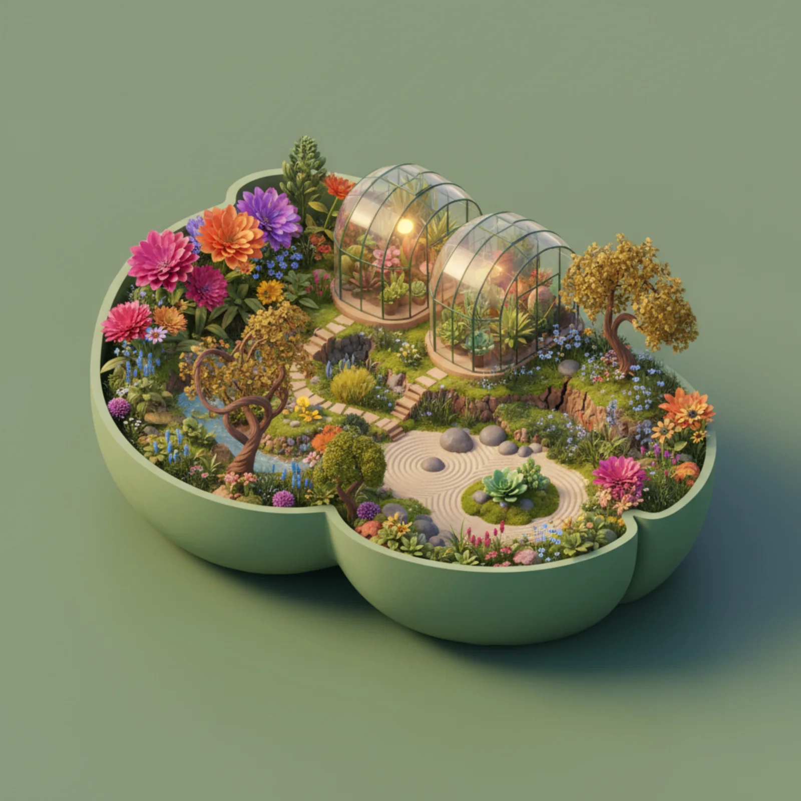
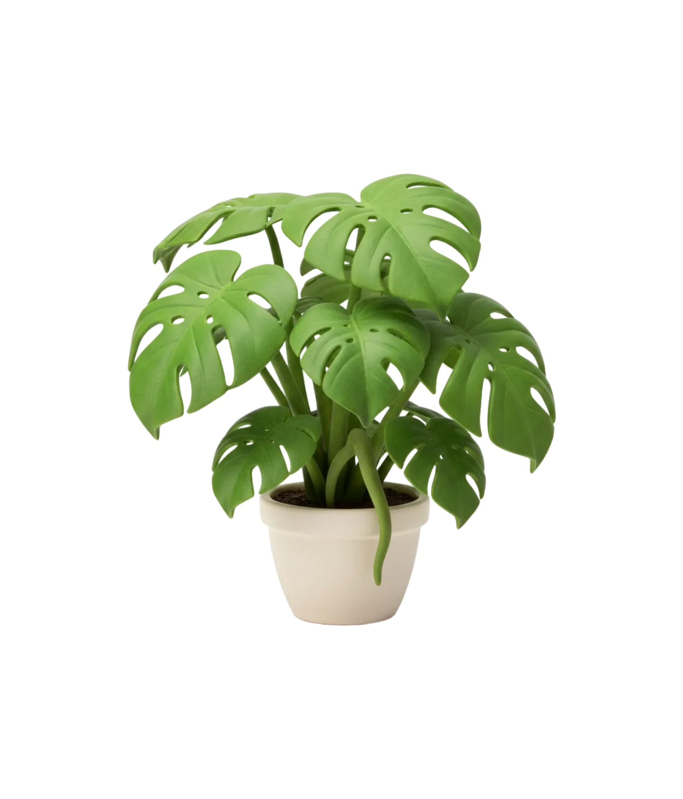
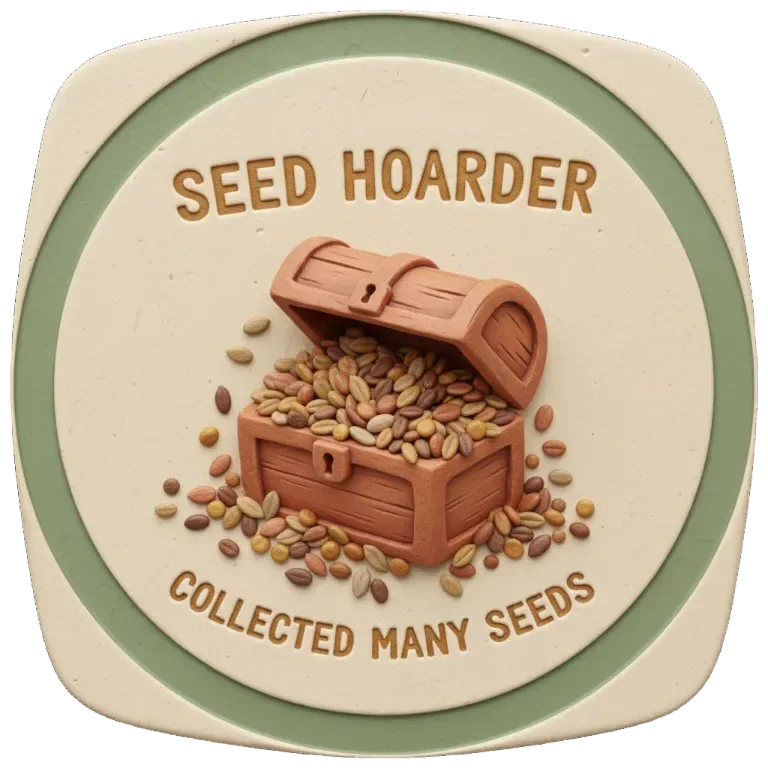
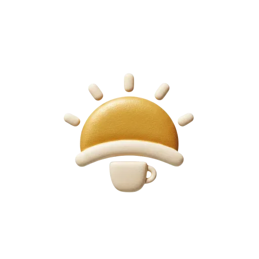
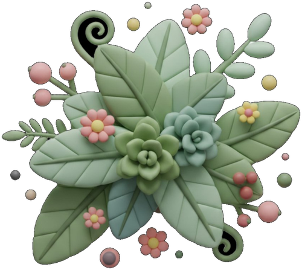

Logos, recursos de marca, capturas de pantalla, información de la fundadora y descripciones listas para prensa y medios.

BloomDay es una app de productividad amable y pensada para el TDAH que reúne gestión de tareas, apoyo para concentrarse, un diario decorado y un jardín que crece en un solo ritual diario. Las tareas terminadas dan semillas, las semillas compran plantas y decoración, y el riego diario hace florecer el jardín, así el progreso se convierte en algo que puedes ver y a lo que puedes volver.
Con más de 200 especies de plantas, más de 100 decoraciones, 19 espacios temáticos, 18 paisajes sonoros y más de 250 pegatinas de arcilla para el diario, BloomDay convierte la planificación diaria en una experiencia más suave y personal. Se sincroniza en ambos sentidos con Notion, acepta tareas por voz y está disponible por completo en inglés, turco y español.
Plantas ilustradas que crecen en varias etapas, de semilla a plena floración, cada una con datos botánicos reales en tres idiomas.
Interiores, jardines al aire libre y huertos en tres entornos, de Cosy Cottage a Night Garden y Tuscan Vineyard.
Sesiones de 25 a 90 minutos con 18 paisajes sonoros, entre ellos lofi, lluvia, tabla, downbeat, cumbia, afrobeat, pájaros y un gato ronroneando.
Construye constancia con el seguimiento de rachas. Un progreso visible que te anima a mantener tu jardín floreciendo.
Plantillas, pegatinas de arcilla, cinta washi y sellos ganados para decorar las páginas, además de cartas en cápsulas del tiempo que se abren cuando florece una planta.
Sincronización con Notion en ambos sentidos, tareas añadidas hablando y widgets de pantalla de inicio para tu racha, tu jardín y tu Bloom Board.



BloomDay lo creó por completo Ezgi Acar, una antigua trabajadora humanitaria que pasó al desarrollo de apps en un cambio de carrera. Con herramientas de IA para avanzar más rápido, construyó BloomDay en torno a una idea sencilla: las herramientas de productividad deberían sentirse amables, sobre todo para quienes tienen una atención que funciona de otra manera.
La app está hecha con React Native (Expo), Supabase para el backend, RevenueCat para las suscripciones y Resend para los correos. Cada ilustración de planta se diseñó para dar calidez y personalidad a la experiencia.
Verdes salvia, tonos tierra y suaves acentos florales.
Titulares cálidos de estilo editorial con una serif tranquila para el texto.
Kit de prensa con logos, capturas y guías de marca.
Descargar kit de prensa (PDF) Pedir capturasBloomDay es un planificador de tareas amable en el que cada tarea terminada hace crecer un jardín virtual. Gana semillas, compra plantas, riégalas cada día y lleva un diario que decoras tú.
BloomDay convierte las tareas de cada día en un jardín que ves crecer. Cada tarea terminada da semillas para plantas y decoración, y el riego diario las lleva de semilla a plena floración. Con más de 200 especies de plantas, 19 temas de jardín, modo enfoque con 18 paisajes sonoros, rachas, un diario decorado y sincronización con Notion en ambos sentidos, BloomDay hace que la productividad resulte gratificante.
BloomDay es una app de productividad que hace crecer un jardín virtual a partir de las tareas terminadas. Las tareas dan semillas, las semillas compran más de 200 especies de plantas ilustradas y más de 100 decoraciones, y el riego diario las lleva por varias etapas de crecimiento hasta la plena floración en 19 espacios temáticos. Los usuarios pueden concentrarse con 18 paisajes sonoros, llevar un diario decorado con pegatinas de arcilla, fijar metas en un Bloom Board de arcilla, sellar cartas en cápsulas del tiempo para su yo del futuro y sincronizar tareas con Notion. Creada por la fundadora en solitario Ezgi Acar, BloomDay es gratis con planes opcionales y una opción única de por vida, en iPhone, iPad, Mac, Android y relojes inteligentes, en inglés, turco y español.
